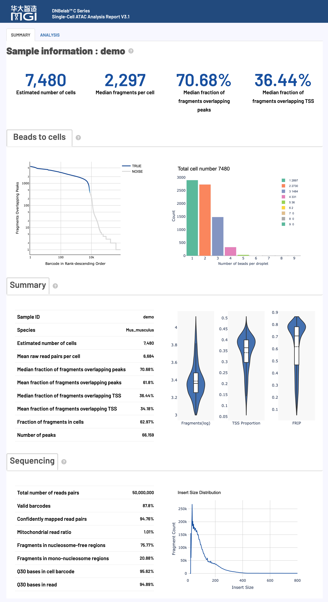

概述 ¶
单细胞 ATAC 测序分析完成后，会在指定的输出目录中生成标准化的文件和子目录结构，专门用于染色质可及性分析和表观基因组学研究。
提示*: 所有输出文件均采用标准格式，兼容主流单细胞表观基因组分析工具（如Signac、ArchR等），遵循国际通用的数据格式规范。
输出目录结构 ¶
.
├── alignment.fragments.sorted.tagged.bam # 质控后的比对结果（分析需添加need_bam参数）
├── alignment.fragments.sorted.tagged.bam.bai # 比对结果索引文件
├── filter_peak_matrix/ # 过滤后的峰矩阵MEX格式目录
│ ├── barcodes.tsv.gz # 过滤后的细胞条形码信息
│ ├── matrix.mtx.gz # 过滤后的稀疏矩阵格式的峰信号数据
│ └── peaks.bed.gz # 过滤后的峰位置信息
├── fragments.tsv.gz # 包含所有比对到基因组的片段信息
├── fragments.tsv.gz.tbi # 片段文件的索引，用于快速随机访问
├── filtered.fragments.tsv.gz # 质量控制后的ATAC片段文件，仅包含通过细胞过滤的片段信息
├── filtered.fragments.tsv.gz.tbi # 细胞过滤的片段文件的Tabix索引，支持基因组区间的快速查询
├── metrics_summary.xls # 分析质量指标汇总表
├── raw_peak_matrix/ # 原始峰矩阵MEX格式目录
│ ├── barcodes.tsv.gz # 原始细胞条形码信息
│ ├── matrix.mtx.gz # 原始稀疏矩阵格式的峰信号数据
│ └── peaks.bed.gz # 原始峰位置信息
├── singlecell.csv # 细胞信息汇总表
└── *_scATAC_report.html # HTML格式的分析报告
文件详细说明 ¶
ATAC片段和峰文件 ¶
核心内容: ATAC-seq 片段信息和峰识别结果，包含完整的染色质可及性数据和细胞条形码标记
fragments.tsv.gz¶
fragments.tsv.gz 是一个包含 ATAC-seq 片段信息的压缩 TSV 文件，是进行下游分析的核心数据之一。
-
用途:
- 染色质可及性分析: 精确定位每个开放染色质区域的基因组坐标。
- 数据可视化: 可直接在 IGV、UCSC 等基因组浏览器中作为 BED 文件加载。
- 下游工具输入: 兼容 ArchR、Signac 等主流单细胞分析工具。
-
内容与格式:
- 文件为 BED-like 格式，每行代表一个唯一的 ATAC-seq 片段。
-
文件具体包含的 5列信息 如下表所示：
字段名 详细描述 chrom参考基因组染色体名称，标识片段所在的染色体位置 chromStart片段在染色体上的调整起始位置（0-based坐标系统），经过转座酶切割位点修正 chromEnd片段在染色体上的调整结束位置（不包含该位置），经过转座酶切割位点修正 barcode细胞ID标识符，对应BAM文件中的 CB标签，用于将片段归属到特定细胞readSupport与该片段相关的总读段对数（包括唯一和重复读段）
-
坐标调整:
- 为精确定位转座酶切位点，片段区间经过调整：起始位置从最左端比对位置向前移动4bp，结束位置从最右端比对位置向后移动5bp。
fragments.tsv.gz.tbi¶
fragments.tsv.gz 文件的 Tabix 索引。
- 核心用途:
- 快速数据访问: 允许对大型
fragments.tsv.gz文件进行快速的、基于基因组区间的查询，而无需读取整个文件。 - 工具性能优化: 被 ArchR、Signac、IGV 等工具用于高效加载和处理特定区域的数据。
- 快速数据访问: 允许对大型
- 格式:
- 由
tabix工具生成的标准二进制索引文件。
- 由
filtered.fragments.tsv.gz¶
这是经过细胞质量控制和过滤后的 ATAC-seq 片段文件，是 fragments.tsv.gz 的子集，仅包含高质量细胞的片段。
- 核心用途:
- 核心下游分析: 这是进行细胞聚类、差异可及性分析等核心下游步骤的推荐输入文件。
- 信噪比提升: 由于去除了低质量细胞和背景噪音，使用此文件可以提高分析结果的准确性和信噪比。
- 内容与格式:
- 文件格式与
fragments.tsv.gz完全相同（压缩的 BED-like TSV），包含相同的5列信息。 - 仅包含通过细胞过滤算法（例如，基于TSS富集和峰区域覆盖的片段数）被识别为"真实细胞"的片段。
- 文件格式与
filtered.fragments.tsv.gz.tbi¶
filtered.fragments.tsv.gz 文件的 Tabix 索引。
- 核心用途:
- 高效下游分析: 确保在使用过滤后的片段文件时，下游工具（如 ArchR, Signac）能够快速、高效地访问特定基因组区域的数据。
- 格式:
- 由
tabix工具生成的标准二进制索引文件。
- 由
alignment.fragments.sorted.tagged.bam¶
这是包含所有具有有效条形码（valid barcode）并且成功比对的片段的 ATAC-seq 比对结果文件。
-
核心用途:
- 深度分析与可视化: 可用于 IGV 等基因组浏览器进行深度可视化，检查特定基因座的比对情况。
- 自定义分析: 为需要直接操作比对级别数据的用户提供原始输入。
-
内容与格式:
- 采用国际标准的 BAM (Binary Alignment Map) 格式。
- 文件已按基因组坐标排序，并建立了索引（
.bai文件），便于快速随机访问。 - 每个读段都通过 TAG 字段标记了细胞来源信息。
-
关键TAG字段说明:
-
细胞和分子条形码信息存储在以下TAG字段中：
标签 类型 描述 CBZ 经过错误校正和细胞合并处理后的细胞条形码标识符 CCZ 经过错误校正的细胞条形码序列 CRZ 测序仪报告的细胞条形码序列
-
alignment.fragments.sorted.tagged.bam.bai¶
alignment.fragments.sorted.tagged.bam 文件的索引。
- 核心用途:
- 快速数据访问: 允许 IGV、Samtools 等工具在无需完整加载BAM文件的情况下，快速跳转和读取任意基因组区域的比对数据。
- 性能保障: 是所有对BAM文件进行随机访问操作的性能保障。
- 格式:
- 由
samtools index命令生成的标准 BAI (BAM Index) 格式。
- 由
峰矩阵文件 ¶
核心内容: 单细胞峰信号计数矩阵，分为原始数据和质控过滤后数据，采用标准稀疏矩阵格式
过滤后的峰矩阵 (filter_peak_matrix/)¶
包含经过高质量细胞过滤后的峰计数矩阵，是进行下游定量分析的核心数据。
-
核心用途:
- 下游定量分析: 作为细胞聚类、差异可及性分析、轨迹推断等分析的主要输入。
- 高质量数据: 只包含被鉴定为真实细胞的条形码，确保分析结果的准确性。
-
内容与格式:
- 采用标准的 Market Matrix Exchange (MEX) 格式，由以下三个压缩文件组成：
文件名 内容描述 barcodes.tsv.gz细胞ID列表，标识通过质控筛选的高质量细胞。每行包含一个细胞ID信息，对应矩阵的列索引 peaks.bed.gz峰区域位置信息文件，采用BED格式存储。包含染色体、起始位置和结束位置，对应矩阵的行索引 matrix.mtx.gz峰区域计数矩阵，采用 Market Matrix 格式。包含矩阵维度信息和非零元素的行、列索引及数值
- 采用标准的 Market Matrix Exchange (MEX) 格式，由以下三个压缩文件组成：
-
格式优势:
- 空间高效: 稀疏矩阵格式（
.mtx）仅存储非零元素，极大节省了存储空间。 - 高度兼容: MEX 格式是单细胞社区的标准（关于矩阵格式详见Market Matrix格式说明），兼容 Seurat, Signac, Scanpy 等几乎所有主流分析工具。
- 空间高效: 稀疏矩阵格式（
原始峰矩阵 (raw_peak_matrix/)¶
包含所有检测到的细胞条形码（未经过滤）的原始峰计数矩阵。
-
核心用途:
- 质量控制评估: 可用于评估细胞过滤的效果，或根据自定义标准进行手动过滤。
- 数据完整性: 保留了所有原始数据，可用于深度挖掘或在需要时重新分析。
-
内容与格式:
- 采用标准的 Market Matrix Exchange (MEX) 格式，其文件组成与
filter_peak_matrix/目录完全相同。 - 包含所有被检测到的条形码，包括高质量细胞、低质量细胞和背景液滴。
- 采用标准的 Market Matrix Exchange (MEX) 格式，其文件组成与
分析指标汇总 ¶
核心内容: 实验质量评估和统计指标汇总，提供完整的数据质量控制信息
metrics_summary.xls¶
采用 Excel 格式的关键分析指标汇总表，提供了对实验整体质量的全面评估。
-
核心用途:
- 质量评估: 快速评估测序数据质量、比对效率、细胞鉴定结果等核心指标。
- 结果概览: 无需查看所有文件即可对分析结果有一个全面的了解。
-
内容与格式:
- 包含三大类别的关键指标：
指标类别 包含内容 基本统计 总读段对数、有效条形码比例、Q30碱基质量等基础测序指标 细胞识别 估计细胞数量、峰区域片段占比、TSS区域片段占比、峰检测数量、TSS富集等细胞调用结果 比对指标 基因组比对率、线粒体比例等比对统计 - 内置推荐的质量控制标准，方便用户判断：
推荐质量阈值：
- 有效条形码比例: >70%
- Q30碱基质量: >75%（条形码和UMI区域）
- 基因组比对率: >50%
- TSS富集分数（人/鼠）: >4
- 峰区域片段比例: >15%
- TSS区域片段比例: >10%
- 重复序列百分比: >10%
- 包含三大类别的关键指标：
singlecell.csv¶
采用 CSV 格式的单细胞级别质量控制信息表，记录了每个细胞条形码的详细统计数据。
-
核心用途:
- 精细化质控: 支持用户根据自定义标准进行更精细的细胞过滤和分析。
- 下游分析输入: 可作为 Signac、Scanpy 等分析工具的细胞元数据(metadata)输入。
-
内容与格式:
- 每一行代表一个细胞条形码。
- 主要列包括：片段数量、峰数量、TSS/peak区域片段数以及是否被判定为高质量细胞、磁珠合并信息等。
*_scATAC_report.html¶
采用 HTML 网页格式的交互式综合分析报告。
-
核心用途:
- 结果可视化: 以交互式图表的形式，直观展示质控结果、细胞聚类、TSS富集等关键分析结果。
- 结果解读: 提供各项指标的生物学意义和技术解释，帮助用户深度解读数据。
- 便捷分享: 单个 HTML 文件，易于传阅和分享。
-
内容与格式:
- 无需网络，可在任何现代浏览器中打开。
- 报告的详细解读请参考本文档下方的 网页报告释义 部分。
- 包含的关键内容模块如下：
报告特点 内容描述 交互式图表 质控指标、细胞聚类、峰分析等可交互可视化图表 统计汇总 关键性能指标的数值汇总和趋势分析 详细解读 各项指标的生物学意义和技术解释
文件格式说明 ¶
技术规范: 输出文件采用的标准格式详细说明
Market Matrix格式 (.mtx.gz) ¶
Market Exchange Format (MEX) 是单细胞分析中用于存储稀疏计数矩阵的标准格式，具有空间高效和高度兼容的优点。
-
核心优势:
- 空间高效: 稀疏矩阵仅存储非零元素，对于通常超过95%为零值的单细胞数据，可极大节省存储空间。
- 高度兼容: 作为国际标准格式，可被 Seurat, Scanpy, Signac 等几乎所有主流分析工具直接读取。
-
文件组成:
- 一个完整的MEX格式数据由以下 三个文件 构成：
文件名 描述 matrix.mtx.gz压缩的稀疏矩阵文件。文件头包含矩阵维度，后续每行记录一个非零元素的位置（行/列索引）和数值。 barcodes.tsv.gz压缩的细胞条形码文件。每行是一个细胞ID，行号对应矩阵的列。 peaks.bed.gz压缩的特征（峰）文件。每行是一个峰的BED格式坐标，行号对应矩阵的行。
- 一个完整的MEX格式数据由以下 三个文件 构成：
网页报告释义 ¶
概述: HTML 网页报告提供了单细胞 ATAC 测序分析结果的全面可视化展示和详细解读，包含关键性能指标的评估，帮助用户快速了解实验质量和分析结果
HTML 网页报告是单细胞 ATAC 测序分析的综合展示平台，整合了从数据质量控制到下游表观基因组学分析的完整结果。该报告采用交互式可视化设计，帮助用户快速评估实验质量、理解分析结果并指导后续研究方向。
使用建议*: 建议按照报告展示顺序依次查看各项指标。
注意: 以下标准仅供参考，实际质量评估应考虑组织类型、细胞状态和实验目标等多种因素。不同样本间存在显著差异，建议结合具体实验背景进行判断。
报告主要内容与结构¶

核心分析指标详解¶
细胞指标 (Cell Metrics) ¶
核心功能: 细胞识别、质量评估和染色质可及性统计，提供实验整体效果的关键指标
质量控制标准：
注意: 以下标准仅供参考，实际质量评估应考虑组织类型、细胞状态和实验目标等多种因素。不同样本间存在显著差异，建议结合具体实验背景进行判断。
| 指标名称 | 推荐值 | 可接受 | 需优化 |
|---|---|---|---|
| Median fragments per cell | ≥ 10,000 | 2,000–10,000 | < 2,000 |
| Median fraction of fragments overlapping peaks | ≥ 30% | 15–30% | < 15% |
| Median fraction of fragments overlapping TSS | ≥ 20% | 10–20% | < 10% |
| Fraction fragments in cells | ≥ 50% | 20–50% | < 20% |
详细指标解释：
| 指标名称 | 详细解释与技术要求 |
|---|---|
|
Estimated number of cells 估计细胞数量 |
|
|
Species 物种信息 |
|
|
Median fragments per cell 每细胞中位片段数 |
|
|
Mean raw read pairs per cell 每细胞平均原始读段对数 |
|
|
Fraction overlapping peaks 片段重叠峰区域比例 |
|
|
Fraction overlapping TSS TSS区域片段重叠比例 |
|
|
Fraction of fragments in cells 细胞内片段比例 |
|
|
Number of peaks 识别峰数量 |
|
测序指标 (Sequencing Metrics) ¶
核心功能: 测序数据的基础质量评估，包括条形码识别率、比对质量和测序准确性
质量控制标准：
注意: 以下标准仅供参考，实际质量评估应考虑组织类型、细胞状态和实验目标等多种因素。不同样本间存在显著差异，建议结合具体实验背景进行判断。
| 指标类别 | 推荐值 | 可接受 | 需优化 |
|---|---|---|---|
| Valid barcodes | ≥ 80% | 70–80% | < 70% |
| Q30 bases in barcode | > 85% | 75–85% | < 75% |
| Q30 bases in read | > 85% | 75–85% | < 75% |
| Confidently mapped read pairs | > 80% | 50–80% | < 50% |
详细指标解释：
| 指标名称 | 详细解释与技术要求 |
|---|---|
|
Total number of reads pairs 测序读段对总数 |
|
|
Valid barcodes 有效条形码比例 |
|
|
Confidently mapped read pairs 基因组比对率 |
|
|
Mitochondria reads ratio 线粒体 reads 比例 |
|
|
Nucleosome-free regions 无核小体区域比例 |
|
|
Mono-nucleosome regions 单核小体区域比例 |
|
|
Q30 bases in barcode 条形码Q30碱基比例 |
|
|
Q30 bases in read 读段Q30碱基比例 |
|
可视化图表1 ¶
核心功能: 细胞质量控制、片段分析和染色质可及性评估的多维度可视化展示
细胞排序图 (Barcode Rank Plot)¶
图表功能: 该图通过将所有细胞条形码按其包含的片段数进行排序，来区分高质量的真实细胞与背景噪音。
如何解读: * 坐标轴: * X轴 (Barcode Rank): 所有细胞条形码按片段数降序排列。左侧为高片段数细胞，右侧为低片段数细胞。 * Y轴 (Fragment Counts): 每个细胞对应的峰区域片段总数（对数刻度）。 * 关键特征 (Knee Point): * 图中曲线通常会有一个明显的"拐点"（Knee Point）。 * 拐点左侧的 蓝色区域 代表被算法识别为高质量的真实细胞。 * 拐点右侧的 灰色区域 则代表背景噪音。 * 交互功能: * 鼠标悬停可查看细胞的详细排序和片段数。 * 蓝色区域的颜色深浅代表该区域内真实细胞的密度。
液滴磁珠分布图 (Droplet Beads Distribution)¶
图表功能: 展示在真实细胞液滴中，捕获到的细胞条形码（Beads）的数量分布情况。
如何解读: * 理论分布: 液滴中磁珠的数量分布理论上符合泊松分布，这反映了微反应体系中随机捕获过程的统计特性。 * 实际影响: 最终的分布会受到测序饱和度、液滴大小均一性、细胞浓度等实验因素的影响。
细胞数据分布图 (Cell Data Distribution)¶
图表功能: 通过三个独立的小提琴图（Violin Plots），分别展示高质量细胞在 片段数 (Fragments)、TSS富集比例 (TSS Proportion) 和 Peak区域片段比例 (Peak Proportion) 这三个关键质量指标上的分布情况。
如何解读: * 小提琴图简介: * 图的宽度表示在该数值位置的细胞密度。越宽的地方，代表有越多的细胞聚集在该数值附近。 * 内部的箱线图（Box Plot）展示了中位数、四分位数等统计信息。 * 各图解读: * 片段数 (Fragments): 展示了细胞包含的片段总数的分布。一个好的文库，其分布的中心（最宽处）应该在一个较高的数值。 * TSS富集比例 (TSS Proportion): 展示了TSS区域片段占比的分布。分布的中心越高，说明细胞整体的转录活性信号越好。 * Peak区域片段比例 (Peak Proportion): 展示了峰区域片段占比的分布。分布的中心越高，说明信噪比越高。
片段长度分布图 (Fragment Length Distribution)¶
图表功能: 展示去重后ATAC-seq片段的插入长度分布，是评估样本质量和染色质结构完整性的关键图表。
如何解读: * 周期性峰 (Periodic Peaks): * ~100bp 以下: 第一个高峰，代表无核小体区域 (Nucleosome-free regions, NFR) 的片段，即开放的染色质。 * ~200bp 左右: 第二个高峰，代表包含单核小体的片段。 * ~400bp, ~600bp: 后续的山峰，代表包含双核小体、三核小体的片段。 * 质量评估: * 优质样本: 具有清晰的、以约200bp为周期的阶梯状山峰，且第一个峰（NFR）显著。这表明细胞核完整性好，染色质结构清晰。 * 质量不佳: 曲线平坦，没有明显的周期性峰，通常意味着样本过度裂解，染色质结构被破坏。
其他核心指标 (Additional Key Metrics) ¶

Percent duplicates（重复序列百分比）¶
- 定义: 被认定为 PCR 重复的片段所占比例。
- 生物学意义: 衡量文库复杂度和测序饱和度的关键指标。
- 质量判读:
- 高重复率（如 >20-30%）通常表示测序深度已接近饱和。
- 极低重复率（如 <10%）可能表示测序深度不足，建议增加测序以发现更多独特片段。
Jaccard threshold（Jaccard 相似度阈值）¶
- 定义: 用于判断任意两个磁珠（Beads）是否来自同一个细胞液滴的相似度阈值。
- 技术背景: 在 C4 ATAC 技术中，一个液滴可能包含多个磁珠，需要通过它们捕获片段的 Jaccard Index 进行合并判断。
- 算法说明: 该阈值由 Otsu 算法自动确定，以获得较优区分效果。为保证分析质量，当计算值低于
0.02时，系统会自动设为0.02。
可视化图表2 ¶
核心功能: 细胞聚类分析、TSS富集模式、饱和度评估和磁珠相似性的高级可视化展示
细胞聚类分析图 (Cluster Analysis)¶
图表功能:
通过 UMAP 降维和 Louvain 聚类算法，将具有相似染色质可及性模式的细胞投影到二维空间，以识别潜在细胞亚群。
如何解读:
- 左图（细胞类型聚类）
- 每个点代表一个细胞。
- 不同颜色代表不同细胞聚类（Cluster），可能对应不同细胞类型或状态。
- 空间位置越接近，细胞染色质开放模式通常越相似。
- 右图（片段数分布）
- 在相同 UMAP 空间上，用颜色梯度展示每个细胞总片段数。
- 颜色越深，片段数越多，通常表示该细胞数据质量更高，可辅助判断聚类可靠性。
转录起始位点（TSS）富集图 (TSS Enrichment Profile)¶
图表功能:
展示所有基因转录起始位点（TSS）附近的 ATAC-seq 片段切割位点富集情况，是衡量 ATAC-seq 信噪比和数据质量的核心指标之一。
如何解读:
- 坐标轴
- X 轴: 相对 TSS 的位置（0 点为 TSS）。
- Y 轴: 归一化后的信号强度（切割频率）。
- 关键特征
- 高质量 ATAC-seq 数据通常在 TSS 中心（0 点）出现明显富集尖峰。
- TSS 两侧信号会快速下降。
- 质量评估
- TSS Enrichment Score 为该图的量化指标，分数越高（如 >4-6）通常表示信噪比越好、数据质量越高。
- 若曲线较平坦、无明显尖峰，通常提示样本质量较差或实验流程存在问题。
单细胞靶向图 (Single Cell Targeting Plot)¶
图表功能:
通过散点图展示每个细胞的两个关键质量指标，用于评估细胞识别（Cell Calling）算法效果。
如何解读:
- 坐标轴
- X 轴（Fragment Counts）: 每个细胞总片段数（对数刻度）。
- Y 轴（TSS Enrichment）: 每个细胞的 TSS 富集分数。
- 质量评估
- 右上角: 高片段数 + 高 TSS 富集分数，通常为高质量真实细胞。
- 左下角: 低片段数 + 低 TSS 富集分数，通常为背景噪音或空液滴，分析中会被过滤。
- 理想情况下，真实细胞与背景噪音之间应存在清晰分界。
饱和度曲线图 (Saturation Curve)¶
图表功能:
评估测序深度是否充分及文库复杂度，即继续增加测序量是否还能发现更多新的（Unique）片段。
如何解读:
- 坐标轴
- X 轴: 平均每个细胞测序读段对数（测序深度）。
- Y 轴: 平均每个细胞中位唯一片段数。
- 曲线趋势
- 线性上升阶段: 曲线较陡，增加测序深度可有效发现更多新片段，投入产出比较高。
- 平台期/饱和阶段: 曲线逐渐平缓，表示文库复杂度基本被充分测序，继续加深测序的新增收益递减。
- 质量评估
- 饱和度（重复率）是该图的量化指标。实践中可将 20%-50% 作为成本与数据完整性之间的常用平衡区间。
磁珠相似性排序图 (Bead Similarity Ranking)¶
图表功能:
用于 C4 ATAC 技术场景下，通过 Jaccard 相似度合并来自同一细胞液滴的多个磁珠（Beads）。
如何解读:
- 坐标轴
- X 轴: 所有磁珠对按 Jaccard 相似度降序排列。
- Y 轴: Jaccard 相似度指数（对数刻度）。
- 关键区域
- 蓝色区域: Jaccard 相似度高于 Otsu 算法自动计算阈值，通常判定为同一细胞来源，片段会在分析中合并。
- 灰色区域: Jaccard 相似度低于阈值，通常判定为不同细胞来源，不进行合并。
相关文档¶
反馈与支持
本文档持续更新中，如发现内容错误或需要补充的信息，欢迎反馈。
文档版本： 3.1 | 最后更新： 2026年4月